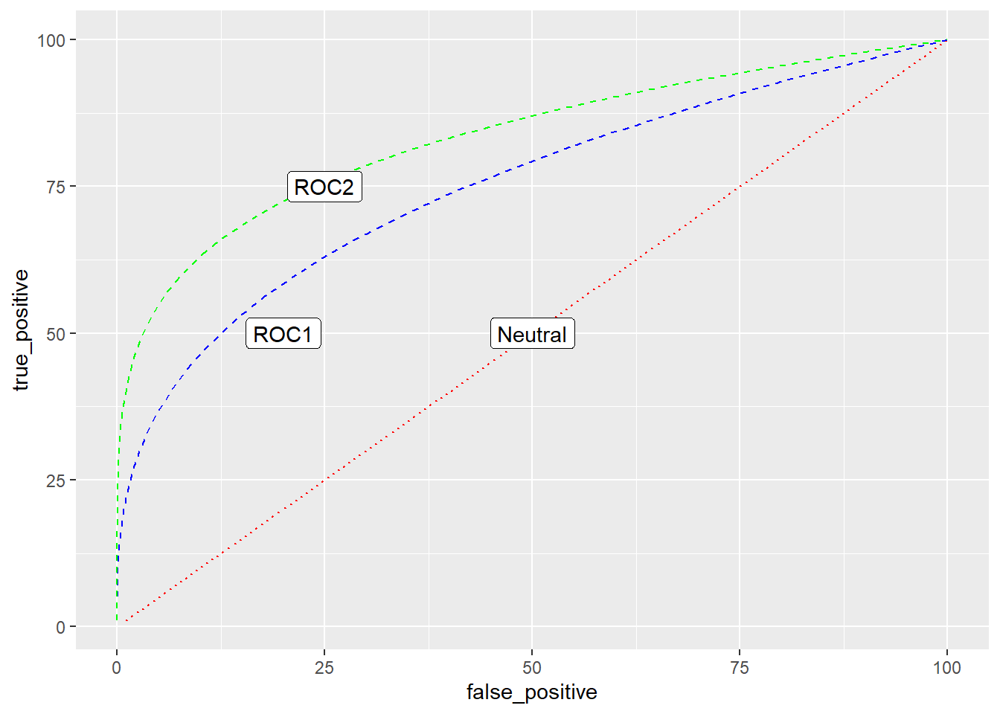
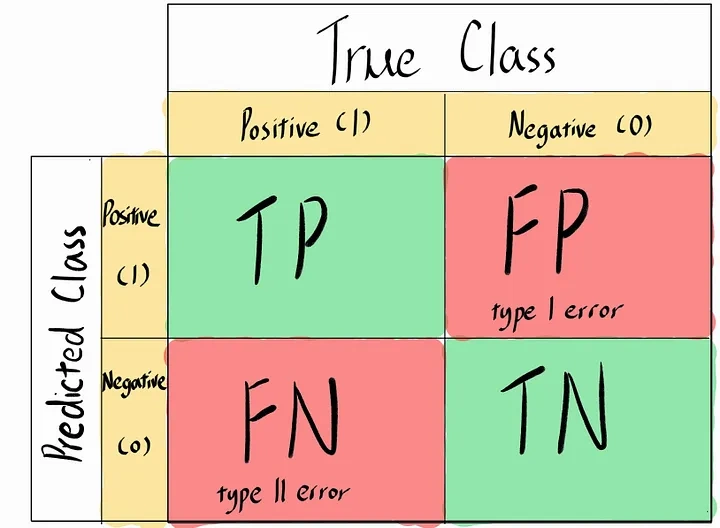

About Learning III
At the end of “training” (after model optimization), we need to ask the following:
How well is our model doing?
Is our model good enough for us to use?
To answer this, we must do model evaluation. And to evaluate, certain measurement or metric is used to judge (evaluate) the performance of your model. It provides a more interpretable measure of your model’s performance.
Also recall that our “learning” output answer will always be in terms of probability.
Common metrics
Precision: proportion of the positive class predictions that were actually correct
\[ Precision = \frac{TP}{TP + FP} \] Recall: quantifies the number of positive class predictions made out of all positive examples in the dataset.(proportion of actual positive class samples that were identified by the model)
\[ Recall = \frac{TP}{TP + FN} \] Here are the essential definitions following above:
True Positives (TP) are the number of positive class samples correctly classified by a model.
True Negatives (TN) are the number of negative class samples correctly classified by a model.
False Positives (FP) are the number of negative class samples that were predicted (incorrectly) to be of the positive class by the model.
False Negatives (FN) are the number of positive class samples that were predicted (incorrectly) to be of the negative class by the model.
F1 Score: harmonic mean of precision and recall, providing a balanced metric for situations where both precision and recall are important. It helps avoid favoring models that perform well in only one of these metrics.
\[ F1 Score = \frac{2 * (Precision * Recall)} {Precision + Recall} \]
Confusion matrix
For classification case, confusion matrix table used to evaluate the performance of a classification model by comparing its predictions to the actual ground truth labels. It provides a summary of the model’s true positive (TP), true negative (TN), false positive (FP), and false negative (FN) predictions for each class in a multi-class classification problem or for the positive class in a binary classification problem.

Goal:We want to optimize the diagonal elements (i.e. minimize errors of both types)
ROC
An ROC curve (receiver operating characteristic curve) is a graph showing the performance of a classification model at all classification thresholds.
How the AUC-ROC curve works
First of all, lets briefly talk about how a model make predict, in the binary case, it will predict 0 or 1, which the model will generate the probability of each classes. In Binary case, it will have P(x=0) and P(x=1), at most of the case the threshold will be 0.5, which either P(x=0) or P(x=1) >0.5, then the model will make the prediction on the one larger than the threshold.
True Positive Rate (TPR) is a synonym for recall and is therefore defined as follows:
\[ TPR = \frac{TP}{TP+FN} \] False Positive Rate (FPR) is defined as follows:
\[ FPR = \frac{FP}{FP+TN} \]
The curve illustrates how well a model distinguishes between positive and negative instances across different thresholds.
AUC represents the overall performance of the model: higher AUC indicates better discrimination between classes.
ROC analysis is a fundamental tool for evaluating the performance of classification models. It helps us to understand how well our model can distinguish between two classes, for example, given an image, is it “myvi” or “iriz”?
ROC stands for Receiver Operating Characteristic. It’s a graphical representation that shows the diagnostic ability of a binary classifier as its discrimination threshold is varied. Basically, it helps us to visualize the trade-off between sensitivity and specificity.
When you have a test that is supposed to distinguish between ‘myvi’ and ‘iriz’, the test doesn’t give a simple ‘yes’ or ‘no’, but a score (e.g., 0.7). We then have to decide which scores should be classified as ‘myvi’ and which as ‘iriz’.
In the ROC curve, the true positive rate (sensitivity) is plotted on the Y-axis, and the false positive rate (1-specificity) is plotted on the X-axis. Sensitivity is the ability of a test to correctly identify those with the disease (true positive rate), whereas specificity is the ability of the test to correctly identify those without the disease (true negative rate).
The ROC curve is created by plotting the true positive rate (TPR) against the false positive rate (FPR) at various threshold settings. The threshold is a cut-off value above which we classify the output as the positive class, and below which we classify it as the negative class.
A perfect test would result in a point at the top left corner of the ROC space (100% sensitivity, 0% 1-specificity), meaning it correctly identifies all the positive cases and none of the negative ones. A test with no discrimination ability would result in a 45-degree diagonal line from the bottom left to the top right.
The area under the ROC curve (AUC) is a single number that summarizes the overall performance of the diagnostic test. An AUC of 1.0 represents a perfect test, while an AUC of 0.5 represents a worthless test. It essentially quantifies the overall ability of the test to discriminate between positive and negative cases.
Choosing an optimal cutoff point is crucial. It is the point that balances sensitivity and specificity in a way that makes sense for the particular clinical situation. A high cutoff point may result in fewer false positives but more false negatives, and vice versa.
However, ROC analysis has limitations.
We want to get models to move from the “neutral” position (where Type I and II errors are the same), to where to ROC1 or even better to ROC2. Since ROC curves is a curve (and may not look as nice as above), the way to compare between two procedures is to compare AUC1 vs AUC2. Area under the ROC curves 1 and 2.
References:
Bishop, C. M., Pattern Recognition and Machine Learning, Springer, 2006
Wan Hasni, MD Labs Data Science Lecture Series, Techna-X, 2020
Rohit Kundu, Precision vs. Recall: Differences, Use Cases & Evaluation, 2022